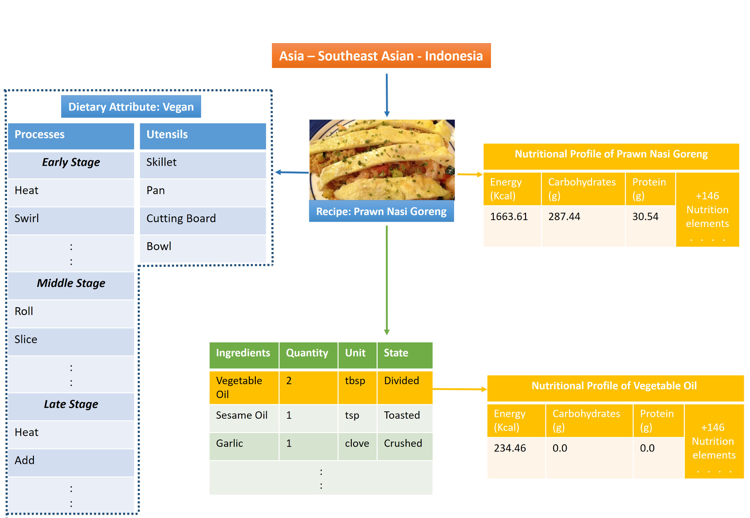

RecipeDB is a structured repository of recipes and ingredients from over 22 world regions, intended to enable data-driven explorations of recipes. In conjunction with flavor molecules data from FlavorDB; RecipeDB facilitates multi-level analysis of traditional recipes (dietary classifications, ingredient composition, nutritional profile, recipes, etc.).
Concepts presented in RecipeDB include recipes, the region they originated in, and the ingredients and utensils utilized in their preparation. It also includes the nutritional profiles of both recipes and their ingredients. The illustration depicts relationships among the different concepts incorporated into RecipeDB. In this example, we have the recipe ‘Prawn Nasi Goreng’ which belongs to the Southeast Asian region, specifically to the Indonesian sub-region. The estimated nutritional profile of the recipe contains information on its nutrient content such as the number of calories, proteins, etc. The recipe is characterized by its dietary attributes, list of utensils used as well as an ordered list of the processes that take place in the recipe. Each ingredient in a recipe is characterized by attributes such as quantity, unit and state as well as its own nutritional profile.
RecipeDB facilitates an elastic search to query recipes based on factors such as geographical location of origin (i.e. region, country), name, dietary classification, ingredients associated/unassociated with the recipe and its nutritional information (i.e. calorie, protein, etc. content).
Refer to the “Search” section on the “How to Use” page.
Refer to the “Advanced Search” section on the “How to Use” page.
A list of all the recipes in RecipeDB can be obtained by simply hitting the ‘Search’ button on the recipe search page without providing any specific query.
A modern web browser.
The similarity in recipes was ascertained based on shared category composition of ingredients and processes.
RecipeDB uses information such as the state and quantity of an ingredient in a recipe to calculate its estimated nutritional profile by mapping it to the USDA data.
For every ingredient of a recipe its features were extracted: ingredient name, state, quantity, unit, dry/fresh, temperature, and size. Using the name of the ingredient and its state, each ingredient was mapped to a unique ‘NDB ID’ from USDA database. Further using the standard nutrition data from USDA data tables, the nutritional profile of the ingredient was estimated by mapping quantity and unit. The final ‘estimated nutritional profile’ is a sum total of nutritional values of each ingredient in it.
The Dietary Style of each recipe was decided based on the constraints followed by each of these categories. For this version the ingredient categories dish and bakery were refrained from the dietary style determination.
The ingredients were manually curated into the 23 categories given below:
For each ingredient found in recipes of the database, a ‘Generic Ingredient Name’ was assigned manually to account for degeneracy due to derivative products. For each generic ingredient the FlavorDB ID and DietRx ID were manually labelled. These external resources provide details of the ‘Flavor Profile’ and ‘Health Impacts’ of the ingredient, respectively.
RecipeDB supports all modern web browsers, but it can be best viewed on Chrome, Firefox and Edge.
Frontend: HTML, CSS, JavaScript, Google Chart, Plotly, amChart
Backend: Flask, SQLite, Python
RecipeDB has sourced the recipes from many online resources, and its nutritional information from the USDA Food Composition Databases.
RecipeDB uses cookies to provide statistics that help us give the best possible experience for our site.
Although RecipeDB is best viewed on a desktop, the website is accessible from most modern mobile web browsers.
You may contact us at bagler+RecipeDB@iiitd.ac.in for errata along with relevant references.